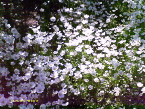

Elbert John Eastmond
Brief Bio


I have lived my entire life in Utah. I was born in Provo, grew up in Cedar City, and served a mission in Salt Lake City for The Church of Jesus Christ of Latter-day Saints. I currently am a BYU-Pathway student striving to get a Software Development Associate degree.
Interests
I love reading, getting lost in my thoughts, and spending time with my family. I also am an avid collector of pictures, videos, music, quotes, and names. I really enjoy playing video games; some of my favorite ones are Ori and the Blind Forest, The Legend of Zelda: Skyward Sword, Minecraft, and the Toy Story 2 Action Game.